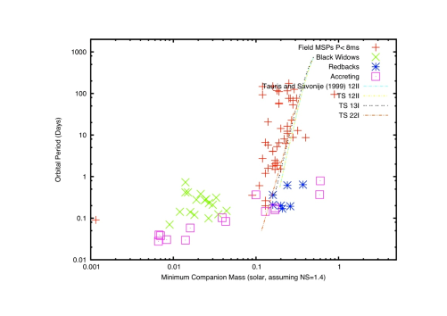
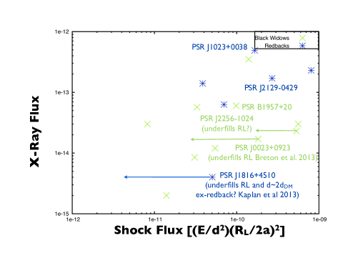

انبعاث الصدمة داخل الثنائية من الأرامل السود وذوات الظهر الأحمر
الملخص
تتيح النجوم النابضة الملي ثانية الكسوفية في أنظمة ثنائية متقاربة ( يوم) منظوراً مختلفاً لرياح النجوم النابضة وصدماتها عما تتيحه النجوم النابضة المعزولة. فمنذ 2009، ازداد عدد هذه الأنظمة المعروفة في حقل المجرة ازدياداً هائلاً. وقد درسنا على نحو منهجي كثيراً من هذه الأنظمة المكتشفة حديثاً عند أطوال موجية متعددة. وفي العادة، يكون الرفيق قريباً من ملء فص روش، وتسخنه النجمة النابضة التي تدفع فقدان الكتلة من الرفيق. وتصطدم ريح النجمة النابضة بهذه المادة فوق سطح الرفيق مباشرة. نناقش خصائص رصدية متعددة لهذه الصدمة، منها الكسوفات الراديوية، والانبعاث في الأشعة السينية المعدل مدارياً، وإمكان صدور انبعاث في أشعة  . وبوجه عام تمتلك ذوات الظهر الأحمر، التي يرجح أن تكون رفقاؤها غير منحلة وأكبر كتلة بكثير، صدمات أشد لمعاناً من الأرامل السود ذات الرفقاء ذوي الكتل المنخفضة جداً. وهذا متوقع لأن رفقاء ذوات الظهر الأحمر الأكبر كتلة يعترضون جزءاً أكبر من ريح النجمة النابضة. كما نقارن هذه الأنظمة بالنجوم النابضة الملي ثانية المتراكمة، التي قد تكون أسلافاً للأرامل السود، ويمكنها في بعض الحالات أن تنتقل ذهاباً وإياباً بين أطوار ذوات الظهر الأحمر وأطوار التراكم.
. وبوجه عام تمتلك ذوات الظهر الأحمر، التي يرجح أن تكون رفقاؤها غير منحلة وأكبر كتلة بكثير، صدمات أشد لمعاناً من الأرامل السود ذات الرفقاء ذوي الكتل المنخفضة جداً. وهذا متوقع لأن رفقاء ذوات الظهر الأحمر الأكبر كتلة يعترضون جزءاً أكبر من ريح النجمة النابضة. كما نقارن هذه الأنظمة بالنجوم النابضة الملي ثانية المتراكمة، التي قد تكون أسلافاً للأرامل السود، ويمكنها في بعض الحالات أن تنتقل ذهاباً وإياباً بين أطوار ذوات الظهر الأحمر وأطوار التراكم.
1 مقدمة
في 1986، اكتُشفت أول نجمة نابضة ثنائية تُظهر كسوفات راديوية، وهي PSR B1957+20، في مرصد Arecibo (Fruchter et al. 1988a). وتقع هذه النجمة النابضة ذات الفترة 1.61 ms في مدار مدته 9.2 hr حول رفيق ذي كتلة منخفضة جداً (). وقد رُصدت كسوفات راديوية منتظمة طوال من المدار عندما كان الرفيق في الاقتران السفلي. وأثناء دخول الكسوف وخروجه، رُصدت تأخيرات في أزمنة وصول النبضات، وقد أشارت هذه التأخيرات، مع مدة الكسوف، إلى أن الكسوفات ناجمة عن غاز متأين زائد داخل النظام (مع أن الآلية الفيزيائية الدقيقة للكسوفات كانت ولا تزال غير واضحة؛ انظر مثلاً Thompson 1995). وأظهرت الدراسات البصرية تغيرات مدارية كبيرة في الضوء الصادر من الرفيق، مما يشير إلى أن الانبعاث يرجع أساساً إلى إضاءته بواسطة النجمة النابضة (Fruchter et al. 1988b). كما أظهر التصوير في H (Kulkarni et al. 1988) وفي الأشعة السينية (Stappers et al. 2003) دليلاً لا لبس فيه على وجود سديم ريح نجم نابض حول النجمة النابضة، وأظهرت أرصاد المصدر النقطي غير الحراري في الأشعة السينية دليلاً على تعديل مداري أيضاً (مثلاً Huang وBecker 2007). وقد بينت قياسات التوقيت طويلة الأمد أن هناك تغيرات في الفترة المدارية أكبر بكثير في المقدار مما يُتوقع من انبعاث الموجات الثقالية، مع مشتقة للفترة المدارية يمكن حتى أن تغير إشارتها مع الزمن (Arzoumanian et al. 1994). ولا تملك هذه التغيرات تفسيراً سهلاً، غير أن فقد الكتلة من النظام وعزماً رباعي القطب مستحثاً في الرفيق قد يساهمان في التغيرات المدارية المقاسة (Applegate & Shaham 1994).
(Kulkarni et al. 1988) وفي الأشعة السينية (Stappers et al. 2003) دليلاً لا لبس فيه على وجود سديم ريح نجم نابض حول النجمة النابضة، وأظهرت أرصاد المصدر النقطي غير الحراري في الأشعة السينية دليلاً على تعديل مداري أيضاً (مثلاً Huang وBecker 2007). وقد بينت قياسات التوقيت طويلة الأمد أن هناك تغيرات في الفترة المدارية أكبر بكثير في المقدار مما يُتوقع من انبعاث الموجات الثقالية، مع مشتقة للفترة المدارية يمكن حتى أن تغير إشارتها مع الزمن (Arzoumanian et al. 1994). ولا تملك هذه التغيرات تفسيراً سهلاً، غير أن فقد الكتلة من النظام وعزماً رباعي القطب مستحثاً في الرفيق قد يساهمان في التغيرات المدارية المقاسة (Applegate & Shaham 1994).
والاستنتاج المستخلص من هذه الأرصاد المتنوعة هو أن PSR B1957+20 يبخر مادة من رفيقه، ثم تصطدم هذه المادة بريح النجمة النابضة. وقد اقتُرحت أنظمة كهذه كمرحلة في تشكل النجوم النابضة الملي ثانية المعزولة بواسطة Ruderman et al. (1989). وبما أن النجمة النابضة بدت في طور تدمير رفيقها، فقد أُطلق عليها اسم النجمة النابضة “الأرملة السوداء”. وقد طور Arons وTavani (1993) وRaubenheimer et al (1995) نماذج مبكرة لانبعاث الصدمة المتوقع من النجمة النابضة الأصلية من فئة الأرملة السوداء. وتنبأت هذه النماذج بإمكان تسريع الإلكترونات إلى  TeV، وبأن التعديل المداري يمكن أن ينشأ من حجب الرفيق لجزء من الصدمة، أو من التحزيم الذاتي للانبعاث بفعل المجال المغناطيسي في الصدمة، أو من تعزيز دوبلر. ويمكن أن تعتمد اللمعانية العالية الطاقة على المسافة إلى الصدمة، والمجال المغناطيسي للنجمة النابضة، وكسر الأيونات، والانبعاث البصري للرفيق (في حالة انبعاث كومبتون العكسي)، ومغنطة الريح. غير أن القياس الإجمالي ينبغي أن يرجع أساساً إلى قدرة تباطؤ دوران النجمة النابضة ، وإلى كسر الريح الداخل في الصدمة
TeV، وبأن التعديل المداري يمكن أن ينشأ من حجب الرفيق لجزء من الصدمة، أو من التحزيم الذاتي للانبعاث بفعل المجال المغناطيسي في الصدمة، أو من تعزيز دوبلر. ويمكن أن تعتمد اللمعانية العالية الطاقة على المسافة إلى الصدمة، والمجال المغناطيسي للنجمة النابضة، وكسر الأيونات، والانبعاث البصري للرفيق (في حالة انبعاث كومبتون العكسي)، ومغنطة الريح. غير أن القياس الإجمالي ينبغي أن يرجع أساساً إلى قدرة تباطؤ دوران النجمة النابضة ، وإلى كسر الريح الداخل في الصدمة  ، وإلى المسافة إلى النظام
، وإلى المسافة إلى النظام  .
.
| (1) |
لم يتحقق بعد أي كشف لا لبس فيه لانبعاث أشعة  الناشئ من الصدمة في PSR B1957+20 (مع أن ثمة اقتراحاً مثيراً للاهتمام بوجود انبعاث GeV في بيانات
الناشئ من الصدمة في PSR B1957+20 (مع أن ثمة اقتراحاً مثيراً للاهتمام بوجود انبعاث GeV في بيانات  ؛ انظر Wu et al. 2012). ومع ذلك، فقد برهنت أرصاد نظام PSR B1259−63 (Johnston et al. (1999); Abdo et al. (2011); H.E.S.S. Collaboration et al. (2013)) قدرة ريح النجمة النابضة على إنتاج انبعاث من الترددات الراديوية حتى طاقات TeV في صدمة داخل ثنائية؛ ويتكون هذا النظام من نجمة نابضة فتية في مدار شديد الشذوذ مدته 3.4 سنة حول نجم Be من التسلسل الرئيس. وبالقرب من الحضيض، تُحجب النبضات الراديوية لـ PSR B1259−63 عند دخوله منطقة التدفق الاستوائي الكثيف الخارج من نجم Be، ويُرصد انبعاث غير نابض في الراديو والأشعة السينية وGeV وTeV. ومع أن لـ PSR B1259−63 أعلى إلى حد ما وأن كسراً أكبر من ريح النجمة النابضة تصدمه الريح النجمية مقارنةً بـ PSR B1957+20، فلا ينبغي أن تزيد اللمعانية الكلية للصدمة بأكثر من رتبة قدر واحدة كثيراً. ومع ذلك، يكون PSR B1259−63، قرب الحضيض، أسطع في الأشعة السينية ببضع مئات من المرات من PSR B1957+20، على الرغم من وجودهما على مسافات متشابهة.
؛ انظر Wu et al. 2012). ومع ذلك، فقد برهنت أرصاد نظام PSR B1259−63 (Johnston et al. (1999); Abdo et al. (2011); H.E.S.S. Collaboration et al. (2013)) قدرة ريح النجمة النابضة على إنتاج انبعاث من الترددات الراديوية حتى طاقات TeV في صدمة داخل ثنائية؛ ويتكون هذا النظام من نجمة نابضة فتية في مدار شديد الشذوذ مدته 3.4 سنة حول نجم Be من التسلسل الرئيس. وبالقرب من الحضيض، تُحجب النبضات الراديوية لـ PSR B1259−63 عند دخوله منطقة التدفق الاستوائي الكثيف الخارج من نجم Be، ويُرصد انبعاث غير نابض في الراديو والأشعة السينية وGeV وTeV. ومع أن لـ PSR B1259−63 أعلى إلى حد ما وأن كسراً أكبر من ريح النجمة النابضة تصدمه الريح النجمية مقارنةً بـ PSR B1957+20، فلا ينبغي أن تزيد اللمعانية الكلية للصدمة بأكثر من رتبة قدر واحدة كثيراً. ومع ذلك، يكون PSR B1259−63، قرب الحضيض، أسطع في الأشعة السينية ببضع مئات من المرات من PSR B1957+20، على الرغم من وجودهما على مسافات متشابهة.
يكمن الفرق الكبير بين صدمة الأرملة السوداء وتلك الموجودة في PSR B1259-63 وصدمات الإنهاء في سدم رياح النجوم النابضة الفتية في مقياس الأنظمة. فبدلالة أنصاف أقطار أسطوانة الضوء ، يقع رفيق النجمة النابضة من فئة الأرملة السوداء عند رتبة ، لا عند القيم الأكثر شيوعاً نحو الحلقات الداخلية لسدم رياح النجوم النابضة الفتية. ويفرض ذلك أن تكون الصدمة في المنطقة التي ينبغي أن يبقى فيها كسر المغنطة  مرتفعاً نسبياً إذا كانت ريح النجمة النابضة مهيمنة مغناطيسياً عند أسطوانة الضوء. وقد يتيح هذا اختبارات رصدية مباشرة للحلول المقترحة لـ “مشكلة سيغما” في صدمات رياح النجوم النابضة، حيث تكون المغنطة المستنتجة عند صدمة الإنهاء من نماذج الانبعاث في الأشعة السينية منخفضة جداً، رغم التوقع بأن تكون عالية جداً عند أسطوانة الضوء (Arons (2012)).
ومن المزايا المحتملة الأخرى لدراسة الصدمات في أنظمة من نوع الأرملة السوداء أن توقيت النجمة النابضة والأرصاد البصرية يتيحان لنا تحديد هندسة النظام بدقة كبيرة، كما أن المدارات القصيرة (
مرتفعاً نسبياً إذا كانت ريح النجمة النابضة مهيمنة مغناطيسياً عند أسطوانة الضوء. وقد يتيح هذا اختبارات رصدية مباشرة للحلول المقترحة لـ “مشكلة سيغما” في صدمات رياح النجوم النابضة، حيث تكون المغنطة المستنتجة عند صدمة الإنهاء من نماذج الانبعاث في الأشعة السينية منخفضة جداً، رغم التوقع بأن تكون عالية جداً عند أسطوانة الضوء (Arons (2012)).
ومن المزايا المحتملة الأخرى لدراسة الصدمات في أنظمة من نوع الأرملة السوداء أن توقيت النجمة النابضة والأرصاد البصرية يتيحان لنا تحديد هندسة النظام بدقة كبيرة، كما أن المدارات القصيرة ( d) تسمح بأرصاد متكررة كثيرة للصدمة كما تُرى من اتجاهات مختلفة.
d) تسمح بأرصاد متكررة كثيرة للصدمة كما تُرى من اتجاهات مختلفة.
لعدة سنوات بدا أن الأنظمة الكسوفية في حقل المجرة قد تكون نادرة جداً. ففي السنوات 20 التي تلت اكتشاف PSR B1957+20، لم يُكتشف سوى 2 أنظمة أخرى، وكان كلاهما ذا فيض قدرة تباطؤ دوراني أصغر بكثير من فيض الأرملة السوداء الأصلية (انظر Roberts 2011 والمراجع الواردة فيه). غير أن أرصاد العناقيد الكروية كشفت أن كسراً معتبراً من نجومها النابضة الملي ثانية إما أنها كسوفية و/أو ذات كتل رفيقة منخفضة جداً. وقد أورد Freire (2005) قائمة تضم 18 من هذه الأنظمة. تمتلك 11 رفقاء ذوي كتل منخفضة جداً () مثل PSR B1957+20، لكن 7 تمتلك كتلاً أقرب إلى ما هو مألوف في الأقزام البيضاء الهيليومية. وكانت الأرصاد البصرية لهذه الأنظمة الأخيرة تميل إلى الإشارة إلى أن الرفقاء، في الواقع، غير منحلة. فهل كانت هذه إذاً أنظمة دُوّرت فيها النجمة النابضة بواسطة رفيق، ثم استبدلت الرفيق الأصلي بآخر غير منحل في لب العنقود الكروي شديد الازدحام؟ إذا كان الأمر كذلك، فمن الطبيعي أن توجد معظم هذه الأنظمة في العناقيد الكروية.
2 PSR J1023+0038 ذو الظهر الأحمر المعياري في حقل المجرة
أثناء مسح راديوي بالانجراف للنجوم النابضة باستخدام تلسكوب Green Bank، اكتُشفت نجمة نابضة بفترة 1.69 ms في مدار مدته 4.8 hr حول رفيق كتلته ومتطابق موضعياً مع المصدر الراديوي FIRST J102347.6+003841 (Archibald et al. 2009). وقد لوحظ هذا المصدر سابقاً بوصفه متغيراً كارثياً محتملاً (Bond et al. (2002))، إذ شهد طيفه البصري تغيراً جذرياً (Wang et al. (2009))، من مصدر ذي خطوط انبعاث قوية وعريضة ومزدوجة القمة تشير إلى قرص تراكم، إلى مصدر أكثر اتساقاً مع طيف نجم من النوع G بلا خطوط انبعاث ولكن بتعديل مداري قوي (Thorstensen & Armstrong (2005)). وقد دل نمذجة منحنى الضوء الفوتومتري، مع قياسات السرعة الشعاعية، على وجود رفيق خفي ذي كتلة أقرب إلى نجم نيوتروني منها إلى قزم أبيض. ولم تؤكد النبضات الراديوية الطبيعة النيوترونية للنجم الرئيس فحسب، بل أظهرت أيضاً كسوفات مدارية منتظمة تعتمد على التردد. وكان ذلك يذكّر بكل من النجمة النابضة من فئة الأرملة السوداء والأنظمة في العناقيد الكروية ذات الرفقاء غير المنحلة، التي اكتُشف أولها بتلسكوب Parkes. غير أن هذا المصدر يقع في حقل المجرة، وكان هناك دليل على طور تراكم حديث، مما يشير إلى أن هذه الأنظمة ذات الرفقاء غير المنحلة تمثل طوراً في حياة نظام لا يزال يخضع لعملية إعادة التدوير، حيث ينقطع التراكم مؤقتاً فقط ويدخل النظام طوراً عابراً تبخر فيه النجمة النابضة الراديوية المكشوفة حديثاً رفيقها. ومع اكتشاف مزيد من هذه الأنظمة في حقل المجرة، أُطلق عليها اسم “ذوات الظهر الأحمر”، نسبة إلى قريبة أسترالية لعنكبوت الأرملة السوداء في أمريكا الشمالية.
وقد أتاحت دراسات بصرية إضافية ودراسات VLBI لـ PSR J1023+0038، مقترنة بدراسات التوقيت الراديوي، تقديراً دقيقاً للتباطؤ الدوراني الذاتي، والمسافة، وزاوية الميل، وعامل ملء الرفيق لفص روش (Deller et al. (2012)). كما بينت أن النجم النيوتروني عظيم الكتلة، ويرجح أن يكون ، مما يعني عزماً للعطالة أكبر بكثير من القيمة المعيارية المشتقة من افتراض كتلة ونصف قطر 10 km. وحتى الآن، فإن PSR J1023+0038 هو الوحيد من ذوات الظهر الأحمر في حقل المجرة الذي يمتلك اختلاف منظر وحركة خاصة محددين بواسطة VLBI، إضافة إلى أرصاد بصرية تشير إلى نجم نيوتروني عظيم الكتلة مع رفيق يملأ فص روش. وبما أن المسافات المستنتجة من قياس التشتت والمحددة من نموذج الإلكترونات الحرة NE2001 (Cordes & Lazio (2002)) غالباً ما تنقص عن المسافة الحقيقية بما يصل إلى عامل 2 للنجوم النابضة عند خطوط عرض مجرية متوسطة (كما كان الحال في PSR J1023+0038)، ولأن الحركة النسبية للمصدر بالنسبة إلينا يمكن أن تؤثر بقوة في معدل تباطؤ الدوران المرصود عبر تأثير Shklovskii (Shklovskii (1970))، ولأن منطقة التفاعل تعتمد على الزاوية التي يشغلها الرفيق ومن ثم على نسبة الكتلتين وعامل ملء فص روش، فإن أي تفسير لانبعاث الصدمة من هذه الأنظمة ينبغي أن يأخذ مجالات عدم اليقين هذه في الاعتبار، ومن الأفضل أن تكون كلها مقيدة رصدياً.
وفي حالة PSR J1023+0038، أُجريت أرصاد واسعة نسبياً في الأشعة السينية أظهرت دليلاً واضحاً على انبعاث من الصدمة (Archibald et al. (2010)). وقد قام Bogdanov et al. (2011) بنمذجة منحنى الضوء في الأشعة السينية ووجدوا أن الدليل يشير إلى منطقة انبعاث قريبة جداً من الرفيق، وأن التغيرات المدارية تنشأ أساساً من حجب الرفيق الجزئي لمنطقة الصدمة. وبالنظر إلى مستوى الانبعاث في الأشعة السينية، وبافتراض أنه سنكروتروني في المقام الأول، فقد استنتجوا مجالاً مغناطيسياً قوياً نسبياً مقداره  G عند الصدمة. وإذا كان هذا هو المجال المغناطيسي الذي تحمله الريح إلى الصدمة، فسيشير ذلك إلى كسر مغنطة عالٍ جداً في الريح، وإلى أن رياح النجوم النابضة حتى مسافة لا تقل عن من أنصاف أقطار أسطوانة الضوء لا تزال مهيمنة مغناطيسياً (أي إن لها قيمة
G عند الصدمة. وإذا كان هذا هو المجال المغناطيسي الذي تحمله الريح إلى الصدمة، فسيشير ذلك إلى كسر مغنطة عالٍ جداً في الريح، وإلى أن رياح النجوم النابضة حتى مسافة لا تقل عن من أنصاف أقطار أسطوانة الضوء لا تزال مهيمنة مغناطيسياً (أي إن لها قيمة  عالية). ويدعم حد أعلى على فيض TeV من VERITAS سيناريو مجال مغناطيسي متوسط القوة عند الصدمة (Aliu et al.، قيد الإعداد). غير أنه ليس واضحاً أن المجال المغناطيسي المستنتج يرجع بالضرورة إلى ريح النجمة النابضة لا إلى الغلاف المغناطيسي للرفيق. فعلى سبيل المثال، إذا كان عزم ثنائي القطب للرفيق مماثلاً لعزم الشمس، فإن مجال سطحه سيكون عند رتبة G، مما قد يؤثر تأثيراً كبيراً في انبعاث الإلكترونات المسرعة في صدمة قرب سطح النجم. كما كُشف PSR J1023+0038 كشفاً ضعيفاً بواسطة
عالية). ويدعم حد أعلى على فيض TeV من VERITAS سيناريو مجال مغناطيسي متوسط القوة عند الصدمة (Aliu et al.، قيد الإعداد). غير أنه ليس واضحاً أن المجال المغناطيسي المستنتج يرجع بالضرورة إلى ريح النجمة النابضة لا إلى الغلاف المغناطيسي للرفيق. فعلى سبيل المثال، إذا كان عزم ثنائي القطب للرفيق مماثلاً لعزم الشمس، فإن مجال سطحه سيكون عند رتبة G، مما قد يؤثر تأثيراً كبيراً في انبعاث الإلكترونات المسرعة في صدمة قرب سطح النجم. كما كُشف PSR J1023+0038 كشفاً ضعيفاً بواسطة  ، لكن لم يتضح بعد ما إذا كان هذا الانبعاث نابضاً (Tam et al. (2010)).
، لكن لم يتضح بعد ما إذا كان هذا الانبعاث نابضاً (Tam et al. (2010)).
3 الجماعة الجديدة من الأرامل السود وذوات الظهر الأحمر المرتبطة بمصادر Fermi
منذ اكتشاف PSR J1023+0038، أدت المسوح الواسعة النطاق والبحوث الموجهة عن مصادر أشعة 
 غير المرتبطة إلى عدد كبير من اكتشافات الأرامل السود وذوات الظهر الأحمر الجديدة (Roberts (2013)). ويوجد حالياً من الأرامل السود و
غير المرتبطة إلى عدد كبير من اكتشافات الأرامل السود وذوات الظهر الأحمر الجديدة (Roberts (2013)). ويوجد حالياً من الأرامل السود و من ذوات الظهر الأحمر معروفة في حقل المجرة.
وتملك هذه الأنظمة عادةً قدرات تباطؤ دوراني (غير مصححة لتأثير Shklovskii) مقدارها ، ومسافات بين kpc (استناداً إلى قياسات التشتت)،
وفترات مدارية أقصر بكثير من يوم واحد. وتُظهر الأنظمة التي لها حلول توقيت طويلة الأمد، ولا سيما ذوات الظهر الأحمر، تغيرات في الفترة المدارية مشابهة لما يُرى في الأرملة السوداء الأصلية. وترتبط الغالبية العظمى من هذه الأنظمة الجديدة بمصادر . غير أنه في جميع الحالات تقريباً، وما إن يُحصل على حل توقيت جيد، يمكن كشف انبعاث GeV نابض، بينما لا توجد إلا أدلة قليلة على أي انبعاث في أشعة
من ذوات الظهر الأحمر معروفة في حقل المجرة.
وتملك هذه الأنظمة عادةً قدرات تباطؤ دوراني (غير مصححة لتأثير Shklovskii) مقدارها ، ومسافات بين kpc (استناداً إلى قياسات التشتت)،
وفترات مدارية أقصر بكثير من يوم واحد. وتُظهر الأنظمة التي لها حلول توقيت طويلة الأمد، ولا سيما ذوات الظهر الأحمر، تغيرات في الفترة المدارية مشابهة لما يُرى في الأرملة السوداء الأصلية. وترتبط الغالبية العظمى من هذه الأنظمة الجديدة بمصادر . غير أنه في جميع الحالات تقريباً، وما إن يُحصل على حل توقيت جيد، يمكن كشف انبعاث GeV نابض، بينما لا توجد إلا أدلة قليلة على أي انبعاث في أشعة  صادر من الصدمة. وتكون فترات النبض في المتوسط أقصر من تلك في عموم جماعة MSP الراديوية، ومشابهة لما يُرى في النجوم النابضة الملي ثانية المتراكمة في الأشعة السينية (AXMSPs) (Patruno & Watts (2012)). وتبين مقارنة علاقة الفترة المدارية بكتلة الرفيق في ذوات الظهر الأحمر والأرامل السود مع AXMSPs أن الأخيرة تبدو وكأنها تصل بين الجماعتين. فالمصادر المتراكمة ذات كتل الرفقاء المشابهة لذوات الظهر الأحمر تمتلك أيضاً فترات مدارية مشابهة، في حين تميل المصادر ذات كتل الرفقاء المشابهة للأرامل السود إلى امتلاك فترات مدارية أقصر. ويشير ذلك إلى أن التراكم قد يعمل ويتوقف عندما لا يكون الرفيق قد طرح غلافه غير المنحل بالكامل بعد، ومن ثم يمكن أن يكون النظام إما من ذوات الظهر الأحمر أو من AXMSP، أما بالنسبة إلى الرفقاء الخفيفين جداً، فبمجرد أن تعمل النجمة النابضة يكون طور التراكم قد انتهى. وقد بُرهنت القدرة على الانتقال ذهاباً وإياباً بين طور ذوات الظهر الأحمر وطور AXMSP
برهاناً مذهلاً في ذات الظهر الأحمر M28I ضمن عنقود كروي.
فقد رُصد هذا النظام وهو يدخل لفترة وجيزة في طور تراكم ويصبح AXMSP في ربيع 2013 (Papitto et al. (2013a))، ثم عاد إلى نجم نابض راديوي خلال بضعة أشهر (Papitto et al. (2013b)). ومع أن الانقطاعات في عملية التراكم متوقعة على المقياس الزمني التطوري للرفيق، فإن آلية هذا التحول السريع ذهاباً وإياباً غير مفهومة حالياً.
صادر من الصدمة. وتكون فترات النبض في المتوسط أقصر من تلك في عموم جماعة MSP الراديوية، ومشابهة لما يُرى في النجوم النابضة الملي ثانية المتراكمة في الأشعة السينية (AXMSPs) (Patruno & Watts (2012)). وتبين مقارنة علاقة الفترة المدارية بكتلة الرفيق في ذوات الظهر الأحمر والأرامل السود مع AXMSPs أن الأخيرة تبدو وكأنها تصل بين الجماعتين. فالمصادر المتراكمة ذات كتل الرفقاء المشابهة لذوات الظهر الأحمر تمتلك أيضاً فترات مدارية مشابهة، في حين تميل المصادر ذات كتل الرفقاء المشابهة للأرامل السود إلى امتلاك فترات مدارية أقصر. ويشير ذلك إلى أن التراكم قد يعمل ويتوقف عندما لا يكون الرفيق قد طرح غلافه غير المنحل بالكامل بعد، ومن ثم يمكن أن يكون النظام إما من ذوات الظهر الأحمر أو من AXMSP، أما بالنسبة إلى الرفقاء الخفيفين جداً، فبمجرد أن تعمل النجمة النابضة يكون طور التراكم قد انتهى. وقد بُرهنت القدرة على الانتقال ذهاباً وإياباً بين طور ذوات الظهر الأحمر وطور AXMSP
برهاناً مذهلاً في ذات الظهر الأحمر M28I ضمن عنقود كروي.
فقد رُصد هذا النظام وهو يدخل لفترة وجيزة في طور تراكم ويصبح AXMSP في ربيع 2013 (Papitto et al. (2013a))، ثم عاد إلى نجم نابض راديوي خلال بضعة أشهر (Papitto et al. (2013b)). ومع أن الانقطاعات في عملية التراكم متوقعة على المقياس الزمني التطوري للرفيق، فإن آلية هذا التحول السريع ذهاباً وإياباً غير مفهومة حالياً.

دُرس عدد من الأنظمة الجديدة في النطاق البصري. ويبدو أن معظمها يكاد يملأ فص روش، غير أن أرملة سوداء واحدة على الأقل (PSR J0023+0923)، وربما ثانية (PSR J2256−1024)، لا تملآن فصي روش الخاصين بهما بدرجة كبيرة (Breton et al. (2013)). وهناك أيضاً نظام واحد (PSR J1816+4510) يُظهر كسوفات وله كتلة رفيق من التوقيت شبيهة بذوات الظهر الأحمر (Kaplan et al. (2012))، لكن الدراسات البصرية تبين أن رفيقه نجم حار جداً وغني بالمعادن ومنخفض الجاذبية، لا يملأ فص روش الخاص به بدرجة كبيرة، وهو طيفياً شبيه بقزم أبيض أولي. ولذلك قد يكون في مرحلة إنهاء طور ذوات الظهر الأحمر (Kaplan et al. (2013)).
كما أُجريت لعدد من الأنظمة الجديدة أرصاد في الأشعة السينية تغطي مداراً واحداً على الأقل (Gentile et al. (2013))، مع أن أياً منها لم يُدرس في الأشعة السينية دراسة موسعة مثل PSR B1957+20 وPSR J1023+0038. وتبدو أطيافها في الأشعة السينية في معظمها مزيجاً من انبعاث حراري وغير حراري. ويُظهر بعضها دليلاً قوياً على تغير مداري، بينما يُظهر بعضها الآخر مؤشرات إلى تغير مداري. والاستثناء هو PSR J0023+0923، بما يتفق مع كون الرفيق لا يملأ فص روش الخاص به، ومن ثم يعترض كسراً أصغر من ريح النجمة النابضة. في الشكل 2، نرسم الفيض المقاس في الأشعة السينية بدلالة الكمية ، حيث  هو نصف قطر فص روش المتوسط للرفيق، و
هو نصف قطر فص روش المتوسط للرفيق، و هو نصف المحور الأكبر للمدار. ومن ثم ينبغي أن تكون هذه الكمية متناسبة مع الفيض الكلي المحتمل من أي صدمة داخل ثنائية، بافتراض أن الرفيق يملأ فص روش الخاص به. ونلاحظ أننا نفترض الصيغة القياسية لـ ولا نحاول أن نأخذ في الحسبان الفروق في عزم العطالة، كما أنه لا توجد في معظم الحالات قيود على الحركة الخاصة، ومن ثم لا يوجد تصحيح لتأثير Shklovskii. أما المسافات، باستثناء حالة PSR J1023+0038، فهي مستمدة من قياس تشتت النجمة النابضة. وفي الحالات التي توجد فيها أدلة على عدم ملء فص روش و/أو على مسافة مختلفة، أشرنا إلى أثر ذلك في فيض الصدمة المستنتج بأسهم متفاوتة الطول. وتبدو القيم المقاسة مرتبطة تقريباً بالفيض الكلي المتوقع من الصدمة داخل الثنائية. ومن المأمول أن تتضح مثل هذه العلاقة أكثر عندما تتوفر لمزيد من المصادر تقديرات أوثق لتباطؤاتها الدورانية الذاتية، ومسافاتها الحقيقية، وعوامل ملئها لفص روش، وكذلك إحصاءات جيدة بما يكفي في أطيافها في الأشعة السينية للفصل بوضوح بين الفيض غير الحراري المنبعث من الريح المصدومة والانبعاث الحراري الصادر من سطح النجم النيوتروني. ولم يُظهر أي من المصادر الأحدث حتى الآن دليلاً على انبعاث سديمي ممتد كما يُرى حول PSR B1957+20.
هو نصف المحور الأكبر للمدار. ومن ثم ينبغي أن تكون هذه الكمية متناسبة مع الفيض الكلي المحتمل من أي صدمة داخل ثنائية، بافتراض أن الرفيق يملأ فص روش الخاص به. ونلاحظ أننا نفترض الصيغة القياسية لـ ولا نحاول أن نأخذ في الحسبان الفروق في عزم العطالة، كما أنه لا توجد في معظم الحالات قيود على الحركة الخاصة، ومن ثم لا يوجد تصحيح لتأثير Shklovskii. أما المسافات، باستثناء حالة PSR J1023+0038، فهي مستمدة من قياس تشتت النجمة النابضة. وفي الحالات التي توجد فيها أدلة على عدم ملء فص روش و/أو على مسافة مختلفة، أشرنا إلى أثر ذلك في فيض الصدمة المستنتج بأسهم متفاوتة الطول. وتبدو القيم المقاسة مرتبطة تقريباً بالفيض الكلي المتوقع من الصدمة داخل الثنائية. ومن المأمول أن تتضح مثل هذه العلاقة أكثر عندما تتوفر لمزيد من المصادر تقديرات أوثق لتباطؤاتها الدورانية الذاتية، ومسافاتها الحقيقية، وعوامل ملئها لفص روش، وكذلك إحصاءات جيدة بما يكفي في أطيافها في الأشعة السينية للفصل بوضوح بين الفيض غير الحراري المنبعث من الريح المصدومة والانبعاث الحراري الصادر من سطح النجم النيوتروني. ولم يُظهر أي من المصادر الأحدث حتى الآن دليلاً على انبعاث سديمي ممتد كما يُرى حول PSR B1957+20.

بدأت تظهر معلومات مهمة عن الصدمات داخل الثنائيات في الأرامل السود وذوات الظهر الأحمر بوصفها فئة. ويلزم إجراء أرصاد أعمق في الأشعة السينية تغطي مدارات متعددة، والحصول على قيود بصرية أفضل على الرفقاء وهندسات الأنظمة، من أجل نمذجة منحنيات الضوء في الأشعة السينية واستخلاص معلومات عن ريح النجمة النابضة. كما ستكون القيود الإضافية في TeV والكشف الواضح عن التعديل المداري عند طاقات GeV مفيدة جداً، وكذلك الكشوفات عند الأطوال الموجية الراديوية. وتمنحنا هذه الأنظمة رؤية مختلفة للرياح فائقة النسبية التي تتسارع في النجوم النابضة وللصدمات التي تنتجها، بما يكمل دراسات سدم رياح النجوم النابضة حول النجوم النابضة الفتية المعزولة.
3.1 الشكر والتقدير
دُعمت أجزاء من هذا العمل من برنامج الباحث الزائر Fermi التابع لـ NASA، بما في ذلك المنحة رقم NNG10PB13P، ومن برنامج الراصد الزائر Chandra بما في ذلك أرقام المنح GO1-12061B وGO2-13056X.
References
- Abdo et al. (2011) Abdo, A. A., Ackermann, M., Ajello, M., et al. 2011, ApJ, 736, L11
- Applegate & Shaham (1994) Applegate, J. H., & Shaham, J. 1994, ApJ, 436, 312
- Archibald et al. (2009) Archibald, A. M., Stairs, I. H., Ransom, S. M., et al. 2009, Science, 324, 1411
- Archibald et al. (2010) Archibald, A. M., Kaspi, V. M., Bogdanov, S., et al. 2010, ApJ, 722, 88
- Arons (2012) Arons, J. 2012, Space Science Reviews, 173, 341
- Arons & Tavani (1993) Arons, J., & Tavani, M. 1993, ApJ, 403, 249
- Arzoumanian et al. (1994) Arzoumanian, Z., Fruchter, A. S., & Taylor, J. H. 1994, ApJ, 426, L85
- Bogdanov et al. (2011) Bogdanov, S., Archibald, A. M., Hessels, J. W. T., et al. 2011, ApJ, 742, 97
- Bond et al. (2002) Bond, H. E., White, R. L., Becker, R. H., & O’Brien, M. S. 2002, PASP, 114, 1359
- Breton et al. (2013) Breton, R. P., van Kerkwijk, M. H., Roberts, M. S. E., et al. 2013, ApJ, 769, 108
- Cordes & Lazio (2002) Cordes, J. M., & Lazio, T. J. W. 2002, arXiv:astro-ph/0207156
- Deller et al. (2012) Deller, A. T., Archibald, A. M., Brisken, W. F., et al. 2012, ApJ, 756, L25
- Freire (2005) Freire, P. C. C. 2005, Binary Radio Pulsars, 328, 405
- Fruchter et al. (1988a) Fruchter, A. S., Stinebring, D. R., & Taylor, J. H. 1988, Nature, 333, 237
- Fruchter et al. (1988b) Fruchter, A. S., Gunn, J. E., Lauer, T. R., & Dressler, A. 1988, Nature, 334, 686
- Gentile et al. (2013) Gentile, P., Roberts, M., McLaughlin, M., et al. 2013, arXiv:1305.6799
- H.E.S.S. Collaboration et al. (2013) H.E.S.S. Collaboration, Abramowski, A., Acero, F., et al. 2013, A&A, 551, A94
- Huang & Becker (2007) Huang, H. H., & Becker, W. 2007, A&A, 463, L5
- Johnston et al. (1999) Johnston, S., Manchester, R. N., McConnell, D., & Campbell-Wilson, D. 1999, MNRAS, 302, 277
- Kaplan et al. (2012) Kaplan, D. L., Stovall, K., Ransom, S. M., et al. 2012, ApJ, 753, 174
- Kaplan et al. (2013) Kaplan, D. L., Bhalerao, V. B., van Kerkwijk, M. H., et al. 2013, ApJ, 765, 158
- Kulkarni & Hester (1988) Kulkarni, S. R., & Hester, J. J. 1988, Nature, 335, 801
- Papitto et al. (2013a) Papitto, A., Ferrigno, C., Bozzo, E., et al. 2013, arXiv:1305.3884
- Papitto et al. (2013b) Papitto, A., Hessels, J. W. T., Burgay, M., et al. 2013, The Astronomer’s Telegram, 5069, 1
- Patruno & Watts (2012) Patruno, A., & Watts, A. L. 2012, arXiv:1206.2727
- Raubenheimer et al. (1995) Raubenheimer, B. C., Brink, C., de Jager, O. C., & Nel, H. I. 1995, ApJ, 444, 419
- Roberts (2011) Roberts, M. S. E. 2011, American Institute of Physics Conference Series, 1357, 127
- Roberts (2013) Roberts, M. S. E. 2013, IAU Symposium, 291, 127
- Ruderman et al. (1989) Ruderman, M., Shaham, J., & Tavani, M. 1989, ApJ, 336, 507
- Shklovskii (1970) Shklovskii, I. S. 1970, Soviet Astronomy, 13, 562
- Stappers et al. (2003) Stappers, B. W., Gaensler, B. M., Kaspi, V. M., van der Klis, M., & Lewin, W. H. G. 2003, Science, 299, 1372
- Tam et al. (2010) Tam, P. H. T., Hui, C. Y., Huang, R. H. H., et al. 2010, ApJ, 724, L207
- Thompson (1995) Thompson, C. 1995, Millisecond Pulsars. A Decade of Surprise, 72, 225
- Thorstensen & Armstrong (2005) Thorstensen, J. R., & Armstrong, E. 2005, AJ, 130, 759
- Tauris & Savonije (1999) Tauris, T. M., & Savonije, G. J. 1999, A&A, 350, 928
- Wang et al. (2009) Wang, Z., Archibald, A. M., Thorstensen, J. R., et al. 2009, ApJ, 703, 2017
- Wu et al. (2012) Wu, E. M. H., Takata, J., Cheng, K. S., et al. 2012, ApJ, 761, 181